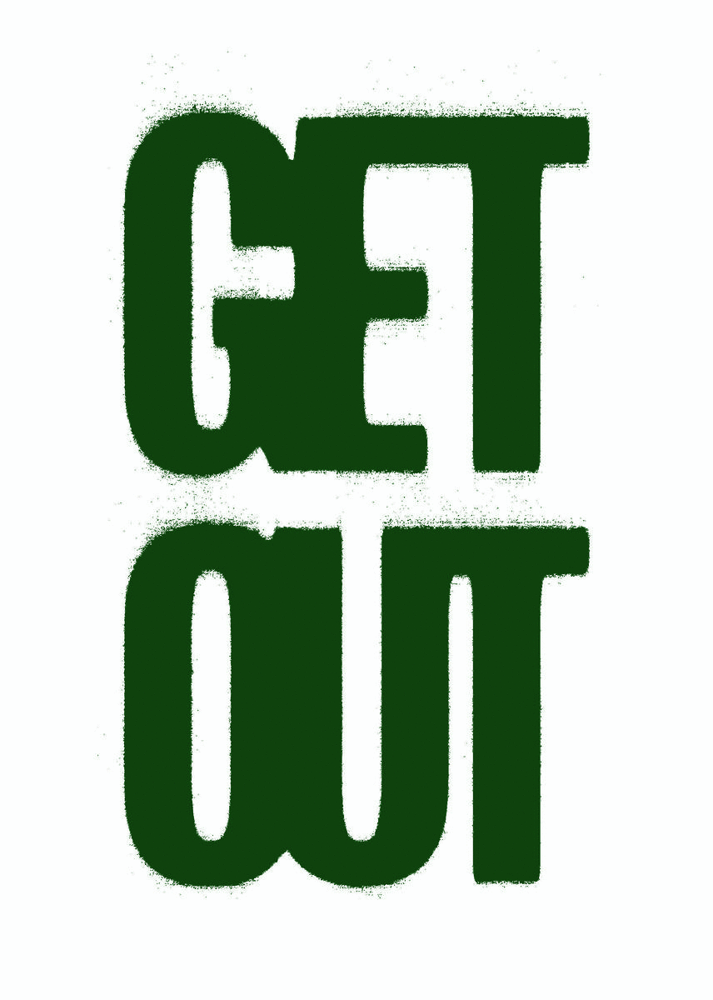

Spore Print is an informative publication I created which is all about mushrooms.
B5, 64 pages, 80gsm recycled paper, full colour. Edition of 40. (2021)

Get Out is a zine publication I created in response to Paul Kingsnorths' book 'Real England'.
It features my photography and quotes from the book, encouraging the preservation of nature and wildlife.
A5, 28 pages, 100gsm recycled paper, one colour. Edition of 25. (2021)
BACK